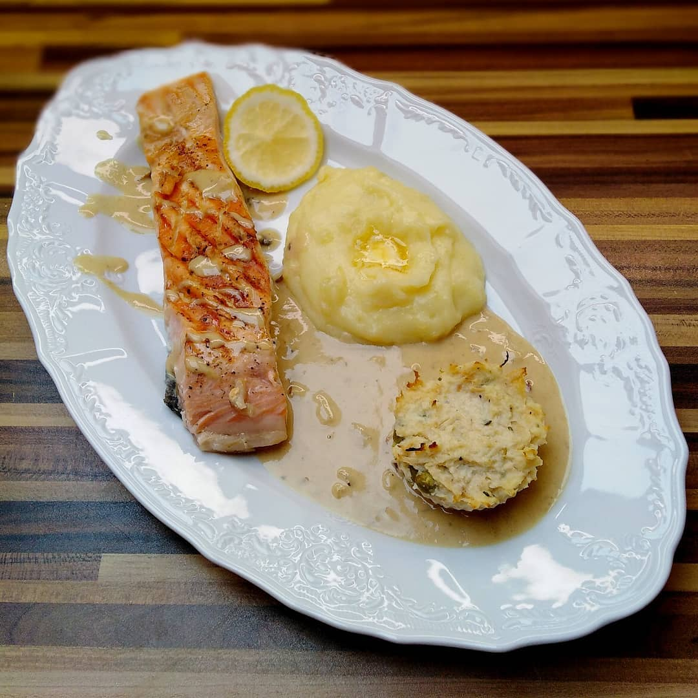

Horčicová omáčka podľa @milena.potuzakova — Normy Jedál
HOŘČICOVO - MEDOVO - SMETNOVÁ OMÁČKA
- smetana 30%
- malá cibulka
- lžíce másla
- lžíce medu
- 2 lžíce plnotučné hořčice
- sůl, pepř, sójovka
Cibulku orestovat na másle, pak zalít smetanou, přidat všechny ingredience, ochutit a chvíli nechat zredukovat. Med, hořčici a sójovku lze dávkovat dle vlastní chuti.
#milenapotuzakova #jedemedal #todame #jidloprozdravi #zmenajezivot #nikdynerikejnikdy #zdravastrava #samedobroty #jimiocima #omacka #horcicovaomacka #hubnu #zhubnu